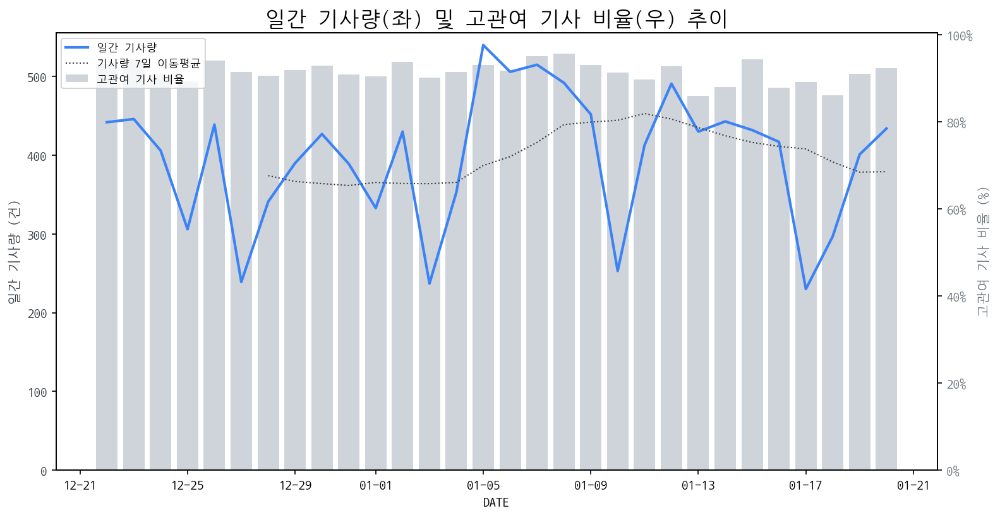

1
시장 활동 지표
기사량 추세 & 이상 징후 탐지
시장의 '전체 기사량'이 평소보다 비정상적으로 급증했는지(Spike)를 차트로 확인하고, LLM이 분석한 급등의 핵심 원인을 파악할 수 있음

고관여 기사란? 산업 연관 키워드로 수집된 기사들 중 디스플레이 키워드에 가중치를 반영하여 도출된 관련성 높은 기사
수집된 기사 수 (2026-01-20)
434
+1% WoW
기사량 변동 수준 (7일 이동평균 대비)
±6.7% 이하
2
오늘의 키워드
급격한 관심 ↑, 주목해야 할 키워드
1
tv
+10.8σ
삼성·LG의 OLED TV가 美 컨슈머리포트 최고 TV 선정과 소니 TV 사업 매각 이슈로 급증했습니다.
Related Metrics
금일 언급량: 67, 전일 대비: +60
Interpretation
프리미엄 TV 시장 지배력 강화
Next Step
'tv' 관련 상세 기사 및 경쟁사 반응 모니터링
2
oled
+6.6σ
MSI, 삼성/LG, 레노버 등 주요 기업들의 QD-OLED 신제품 출시 및 호평으로 시장 관심 고조
Related Metrics
금일 언급량: 43, 전일 대비: +30
Interpretation
OLED 기술 리더십 강화
Next Step
핵심 토픽 'OLED_Topic' 관련 신호입니다. 3번 섹션(키워드 감성분석)에서 해당 토픽의 감성 변동을 교차 확인하세요.
3
소니
+5.5σ
소니의 TV 사업 철수 및 TCL과의 합작사 설립 소식으로 관련 키워드 급증.
Related Metrics
금일 언급량: 16, 전일 대비: +16
Interpretation
경쟁 구도 재편 가능성
Next Step
핵심 토픽 'MicroLED_Topic' 관련 신호입니다. 3번 섹션(키워드 감성분석)에서 해당 토픽의 감성 변동을 교차 확인하세요.
4
모니터
+3.8σ
MSI와 한국레노버의 신규 QD-OLED 모니터 출시 소식이 관련 키워드 급증을 주도했습니다.
Related Metrics
금일 언급량: 16, 전일 대비: +15
Interpretation
프리미엄 모니터 시장 성장 기대
Next Step
'모니터' 관련 상세 기사 및 경쟁사 반응 모니터링
3
실시간 Risk 키워드
경계해야 할 시그널 탐지
특정 토픽의 부정 감성 점수가 급등할 때 이를 즉시 탐지하고, "근거 기사" 링크를 통해 리스크의 실체를 빠르게 파악할 수 있음
키워드 분석 결과, 오늘은 걱정할 만한 하락 신호가 없습니다. (부정 언급량 변화: +1.5σ 이내)
4
주요 이벤트 모니터링
실시간 산업 동향 파악을 위한 주요 활동
최근 발생한 주요 기업들의 신제품 출시, 투자 등 주요 이벤트를 제공하여 매일 경쟁사 동향을 확인할 수 있음
한국레노버가 크리에이터와 게이머를 타겟으로 한 프리미엄 모니터 신제품 2종을 출시했습니다. 이번 신제품은 고성능 및 특화 기능을 갖춘 프리미엄 라인업 강화 전략의 일환입니다.
Impact
이번 한국레노버의 프리미엄 모니터 출시는 고성능 디스플레이 시장에서의 경쟁을 심화시키고, 관련 시장의 기술 혁신 및 차별화 전략을 가속화할 것으로 예상됩니다.
Next Step
타사 프리미엄 모니터의 스펙과 가격 경쟁력을 면밀히 분석하고, 자사 제품과의 차별화 포인트를 강화하거나 새로운 프리미엄 라인업 출시를 검토해야 합니다.
중국 BOE는 한국의 LCD 기술을 기반으로 설립되어 '중국의 삼성'을 목표로 급성장했습니다. 이는 한국 디스플레이 산업의 기술 유출 및 해외 경쟁 심화 가능성을 시사합니다.
Impact
BOE의 빠른 성장은 기존 한국, 대만 등 선두 업체들의 시장 점유율을 위협하며, 패널 가격 경쟁 및 기술 개발 경쟁을 더욱 치열하게 만들 것입니다.
Next Step
경쟁사 BOE의 기술 동향을 면밀히 모니터링하고, 차세대 디스플레이 기술 R&D에 집중하여 기술 리더십을 유지해야 합니다.
5
지금 주목해야 할 뉴스 TOP 3
소니 TV 사업, 중국 TCL에 팔린다
소니가 TV 하드웨어 사업을 소니가 TV 하드웨어 사업을 소니가 TV 하드웨어 사업을 분사해 중국 TCL과 합작 법인을 설립한다.20일(현지시간) IT매체 더 버지는 소니가 TV 사업을 새로운 합작 회사로 이전하며, 소니가 TV 사업을 새로운 합작 회사로 이전하며, 출자 비율은 TCL 51%, 소니 49... 출자 비율은 TCL 51%, 소니 49... 소니 49... 소니 브라비아 OLED OLED OLED OLED OLED OLED OLED OLED OLED OLED OLED OLED OLED OLED OLED OLED OLED OLED OLED OLED OLED OLED OLED OLED OLED OLED OLED OLED OLED TV [사진: 소니] 소니가 TV 하드웨어 사업을 소니가 TV 하드웨어 사업을 분사해 중국 TCL과 합작 법인을 설립한다.
TCL-소니, 합작사 설립 추진...'TV 1위' 삼성전자 위협
> 기사 본문이 너무 짧아 요약할 수 없습니다.
삼성전자 TV 1위 뺏기나, 中 TCL·日 소니 합작사 설립 추진…합치면 출...
> 기사 본문이 너무 짧아 요약할 수 없습니다.